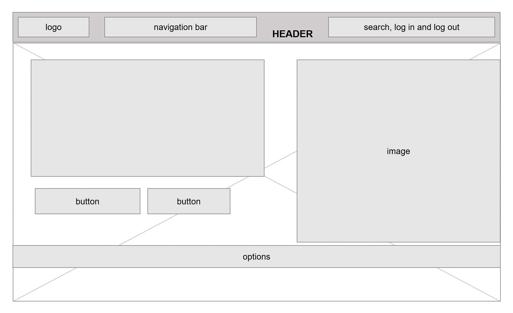

M1C2 UI/UX Assignment
M. Alexandra Dodu
Task One

Task Two
Color scheme from https://timmyomahony.com/:
Task Three: User story para X (Twitter)
Como usuaria de X (Twitter),
Quiero leer tuits personalizados basados en mis intereses y actividad,
Para estar al tanto de noticias e interacciones importantes, sin abrumarme con información irrelevante.
Task Four: Objetivos principales de las plataformas.
- Facebook: Conectar personas desde cualquier lugar, permitiendo interacciones a través de publicaciones y mensajes.
- X (Twitter): Facilitar la publicación de noticias, pensamientos, estados, etc. rápida y corta (de hasta 280 caracteres).
- Google: Facilitar el acceso a información organizada en línea.
- Youtube: Proporcionar una plataforma para compartir y ver vídeos en línea.